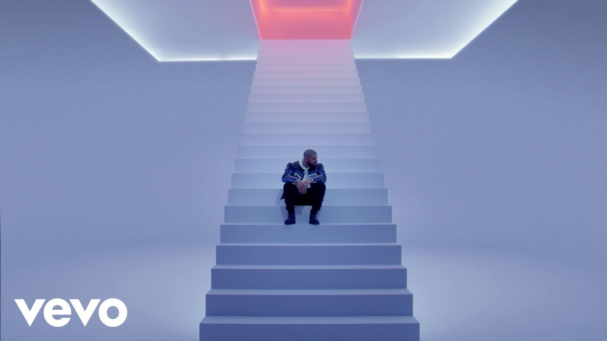

Popular Songs
- One Dance - In My Feelings - God's Plan
- God's Plan
 - Hotline Bling
- Hotline Bling

- Started From The Bottom.jpeg)
Aubrey Drake Graham (born October 24, 1986) is a Canadian rapper, singer, and actor. He is credited with popularizing R&B sensibilities in hip-hop music through rap-singing. Drake first gained recognition as Jimmy Brooks in the CTV teen drama series Degrassi: The Next Generation (2001–2008) and began his music career by independently releasing the mixtapes Room for Improvement (2006), Comeback Season (2007), and So Far Gone (2009) before signing with Young Money Entertainment.
- God's Plan
- Hotline Bling

- Started From The Bottom